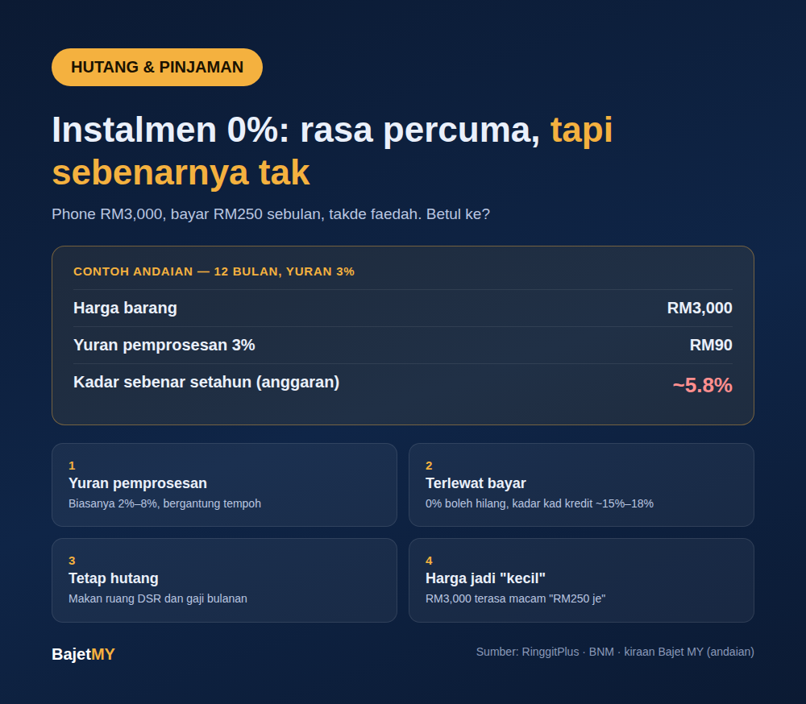

"0% instalmen 12 bulan" memang menarik. Phone RM3,000? Bayar RM250 sebulan, takde faedah. Siapa tak nak?
Tapi "0% faedah" tak sama dengan "percuma". Ada empat benda yang jarang disebut.

1. Yuran pemprosesan
Banyak pelan instalmen 0% (Easy Payment Plan atau EPP pada kad kredit) mengenakan yuran pemprosesan sekali di depan. Menurut RinggitPlus, yuran ini biasanya dalam lingkungan 2% hingga 8%, bergantung pada tempoh. Tempoh lebih panjang biasanya yuran lebih tinggi. Bank Negara sendiri pernah mengingatkan bahawa skim bayar kemudian "tanpa faedah" mungkin tetap ada caj lain seperti yuran pemprosesan dan caj lewat bayar.
Yuran tu nampak kecil. Tapi sebab kita bayar balik sedikit demi sedikit, kadar sebenar setahun jauh lebih tinggi daripada peratus yuran tu.
Contoh (andaian, bukan tawaran sebenar): barang RM3,000, instalmen 12 bulan RM250 sebulan, yuran pemprosesan 3% (RM90).
| Perkara | Jumlah |
|---|---|
| Harga barang | RM3,000 |
| Yuran pemprosesan 3% | RM90 |
| Kadar sebenar setahun (anggaran) | sekitar 5.8% |
| Jika yuran 5% (RM150) | sekitar 10% |
Maksudnya, "0%" tu sebenarnya bukan 0%. Ia kos yang disembunyikan dalam yuran.
2. Terlewat bayar, 0% boleh hilang
Kalau terlewat bayar satu bulan, bank boleh membatalkan kadar 0% dan mengenakan kadar kad kredit biasa pada baki. Kadar kad kredit biasanya sekitar 15% hingga 18% setahun. Selain itu, bayaran yang terlewat dicatat dalam CCRIS dan CTOS, jadi ia menjejaskan skor kredit korang bila nak mohon pinjaman rumah atau kereta.
3. Ia tetap hutang, dan ia makan ruang DSR
Instalmen 0% duduk atas kad kredit korang. Bulan-bulan tu, RM250 sebulan sudah terikat. Kalau ada tiga atau empat instalmen serentak, tiba-tiba hampir seribu ringgit dah hilang dari gaji sebelum sempat buat apa-apa. Ini yang menjejaskan DSR dan ruang bernafas bulanan.
4. Kesan psikologi: harga jadi terasa kecil
Ini yang paling berbahaya. Bila harga dipecahkan, RM3,000 jadi "RM250 je". Otak kita fokus pada angka bulanan, bukan jumlah penuh. Ramai orang akhirnya beli barang yang mereka tak akan beli kalau kena bayar RM3,000 sekali gus. Ini sebab utama instalmen 0% digunakan dalam jualan: ia menjadikan barang mahal terasa mampu.
Bila instalmen 0% memang berbaloi?
Tak semua buruk. Ia boleh berbaloi kalau:
- Yuran pemprosesan kecil atau tiada, dan korang dah baca terma dengan teliti.
- Korang memang dah ada duit untuk bayar penuh, dan guna instalmen sekadar untuk jaga aliran tunai, dengan duit itu diletakkan dalam simpanan.
- Korang yakin boleh bayar setiap bulan tepat masa, tanpa sebarang risiko terlewat.
- Barang tu memang keperluan, bukan "murah sebab 0%".
Sebelum tekan "bayar ansuran"
- Tanya: kalau takde pilihan instalmen, adakah aku masih nak beli? Kalau jawapannya tak, jangan.
- Kira jumlah penuh termasuk yuran, bukan angka bulanan.
- Semak berapa instalmen lain yang sedang berjalan dan kesannya pada DSR.
- Set bayaran automatik supaya tak terlewat.
- Guna kalkulator bayar hutang untuk lihat berapa lama baki hutang korang akan selesai.
Sumber
- RinggitPlus — Why Your "0% Interest" Easy Payment Plan Still Costs You Money
- Bank Negara Malaysia — peringatan mengenai skim bayar kemudian (BNPL) dan caj lain
- Kadar sebenar dalam contoh dikira oleh Bajet MY berdasarkan andaian yang dinyatakan; ia bukan tawaran mana-mana bank